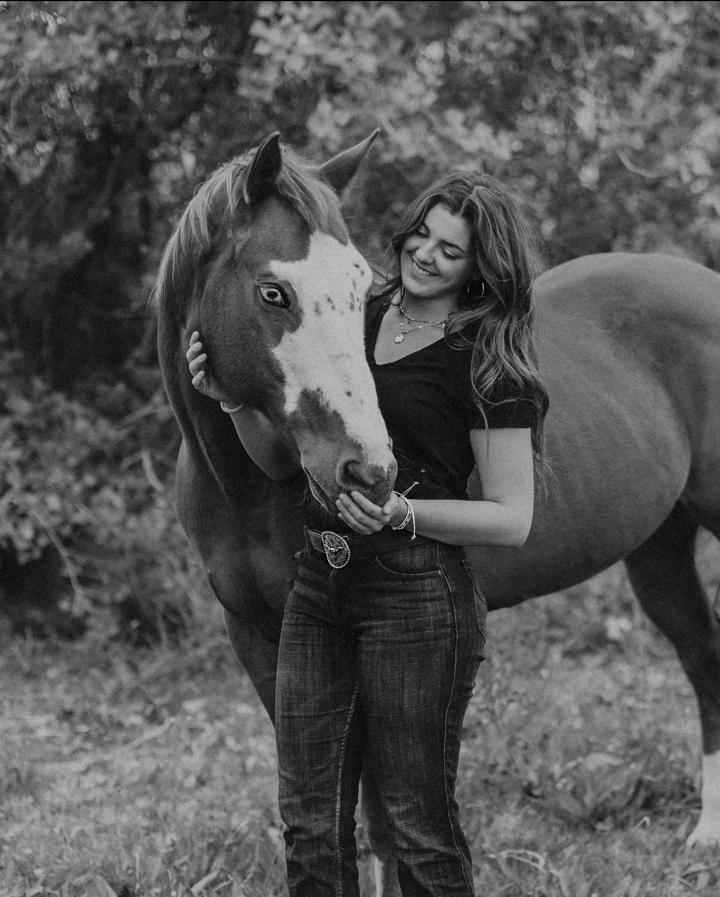
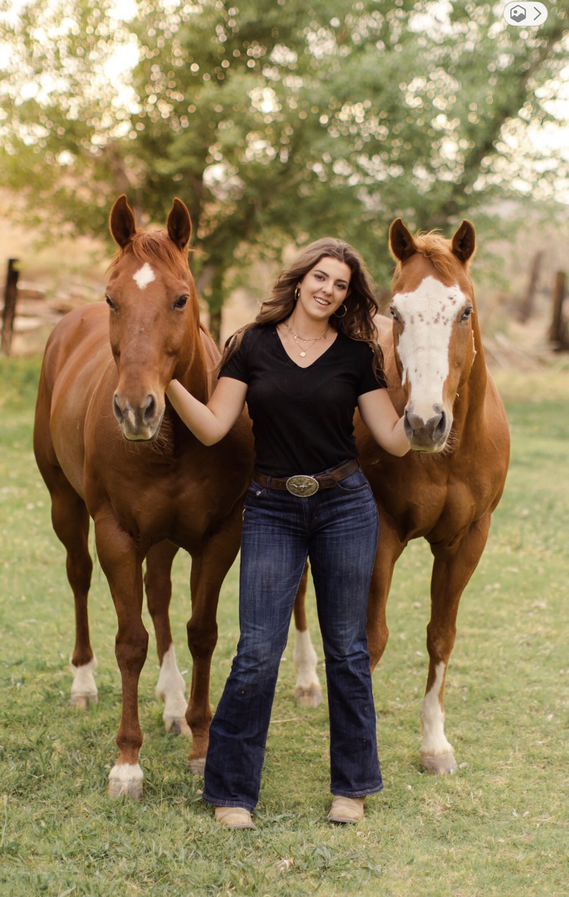
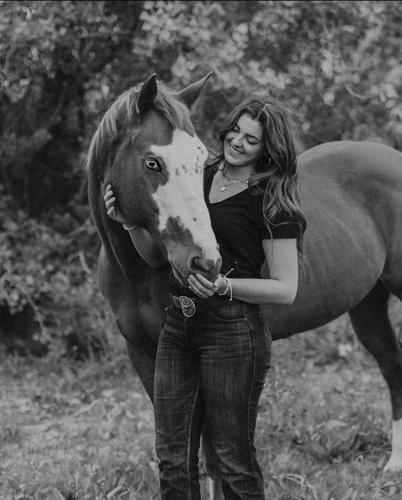
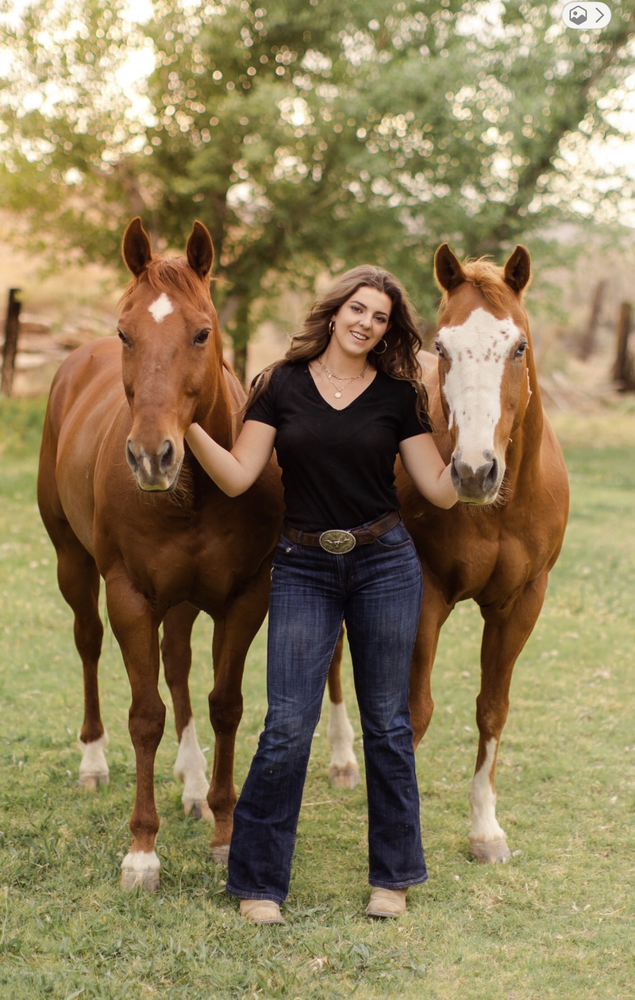

Analyse du site
Site analysé : Centre équestre La Courbette https://www.lacourbette.fr/
Justification du choix du site
Nous avons choisi le site du centre équestre La Courbette car il est directement lié à un intérêt personnel au sein de notre équipe. En effet, Julie, l'une des membres du groupe, pratique régulièrement l’équitation. Ce site reflète donc une activité qu’elle connaît bien et à laquelle elle s’intéresse activement.
Ce choix constitue un bon terrain d’exploration pour le projet, car la page d’accueil du site est visuellement riche et contient plusieurs sections structurées, incluant une barre de navigation, des images, des textes descriptifs et des liens vers différentes pages secondaires. Ces éléments permettent une analyse pertinente de la structure HTML, de la mise en page en CSS et du comportement réactif du site.
Les photos ci-dessous illustrent la pratique de l’équitation par Julie et renforcent le lien entre le thème du site sélectionné et les intérêts réels de l’équipe.
 



Présentation générale du site
Le site La Courbette est un site vitrine destiné à présenter un centre équestre et ses services : cours d’équitation, poney-club, stages, hébergement, contact et informations pratiques.
Il s’adresse à un public varié (enfants, adultes, cavaliers débutants ou confirmés) et met l’accent sur l’aspect visuel, la navigation claire et l’accessibilité des informations.
Analyse HTML de la page d'accueil
Le document HTML de la page d'accueil est très volumineux, mais il suit une organisation globale
cohérente.
Effectivement, on retrouve dans le conteneur principal (<body>) les différentes
sections clairement séparées :
l'en-tête, la navigation principale, le contenu principal et le bas de page. Toutes ces sections sont
séparées par plusieurs balises <div> composées de plusieurs classes différentes.
Lorsque l'on a reproduit la page, nous n'avons pas utilisé autant de balises qu'eux pour toutes les
sous-divisions.
Tout d'abord, juste avant le header, la page d'accueil commence avec une classe servant à appliquer
l'image de fond d'écran sur toute la page. Par la suite, la première balise <div>
servant au <header> regroupe le logo, le titre et la navigation principale. Le logo
est intégré dans une balise <img> placée à l'intérieur d'un lien
<a>,
ce qui permet un retour direct à la page d'accueil. Le nom du site apparaît sous forme de texte
cliquable, structuré comme un titre principal, ce qui renforce l’accessibilité et la lisibilité.
<a href="https://www.lacourbette.fr/">
<img src="image.png" alt="bienvenue à la courbette !">
</a>
<span>Centre équestre La Courbette</span>
L’utilisation de l’attribut alt sur l’image du logo est pertinente,
car elle apporte une description textuelle du visuel.
Navigation principale
La navigation est construite dans une balise <nav> et est composée d'une liste non
ordonnée <ul> avec des items <li>, ce qui correspond à une
structure logique pour un menu de navigation.
Sous-navigation
Après la navigation principale, la section du header est terminée. Cependant, avant de rentrer dans le
main, ils ont rajouté une autre section avec la balise <nav> pour une
sous-navigation.
Certains des éléments li contiennent des sous-menus imbriqués, permettant d'organiser les
pages secondaires de manière hiérarchique.
On peut voir de la page d'accueil que cette dernière contient 4 autres pages secondaires ne faisant pas
partie de la navigation principale. Cette sous-navigation est aussi composée de <ul>
avec des items <li>, toutefois plus petits et subtils.
<ul class="cc-nav-level-0">
<li><a href="/">Centre equestre</a></li>
<li><a href="/les-tarifs/">Les Tarifs</a></li>
</ul>
Navigation mobile
Une navigation distincte est prévue pour les écrans mobiles. En effet, lorsqu'on tombe en bas de 768px,
la navigation principale est délaissée pour laisser place à une barre blanche avec un bouton en haut du
header. Lorsqu'on clique sur le bouton, une barre latérale s'ouvre
avec les éléments li de la navigation principale. Nous avons utilisé l'aide de ChatGPT pour
avoir un brouillon de comment créer le nouveau menu en cliquant sur le bouton avec JavaScript.
Il nous a aidé entre autres à faire le lien entre les trois pages HTML, CSS et JavaScript.
<nav class="jtpl-mobile-navigation"> Par la suite, on arrive à la section <main>. Toute la section est composée
exclusivement de plusieurs <div> avec des classes class="j-module n j-"
avec un dernier terme différent pour chacune des classes.
Ce sont par ces divs qu'ils divisent leur contenu principal. Le contenu principal est organisé autour
des titres hiérarchisés <h1> pour le titre du site, <h2> pour les
sous titres des sections importantes, puis
<h3> et les paragraphes (<p>), ce qui facilite la lecture du site.
Images et contenu multimédia
Les images jouent un rôle central dans la page et sont généralement intégrées dans
des balises <figure> servant au conteneur de l'image. Les images sont parfois
accompagnées d'une balise
<figcaption>. Ils mettent les images dans img par la suite avec un lien
scrset permettant d'avoir plusieurs grandeurs d'images responsive.
<figure>
<img src="image.jpg" alt="Le Manoir de La Courbette">
<figcaption>Le Manoir de La Courbette</figcaption>
</figure>
<iframe src="https://www.youtube-nocookie.com/embed/..."></iframe>
La page d'accueil contient aussi deux vidéos youtube dans des balises <iframe>
permettant de regarder la vidéo soit sur Youtube, soit directement sur le site internet. Cependant, la
configuration des vidéos nous donne une erreur 153.
Après des recherches sur StackOverFlow, cela semble être un problème répandu étant parfois attribué aux
cookies. Nous avons essayé de régler la configuration, sans succès. En ouvrant le site par un serveur
local, les vidéos semblent fonctionner. Au moins,
le lien dans la balise iframe permet d'être redirigé vers le site de Youtube.
Un autre contenu multimédia, encore une fois dans une balise
<iframe>, consiste en la Map
pour la localisation du site équestre.
Section Contact et bas de page
La page contient aussi un formulaire de contact grâce à la balise <form> avec une
méthode POST et des input liés à des labels. Les inputs sont requis et une
validation est effectuée.
<input type="text" name="nom">
<input type="email" name="email">
<textarea name="message"></textarea>
Enfin, le bas de page regroupe des liens informatifs essentiels tels que les mentions légales, la politique de confidentialité et le plan du site.
<div class="j-meta-links">
<a href="/about/">Mentions légales</a>
</div>
Le HTML du site est très détaillé et comporte de nombreuses classes et div. Nous n'avons pas utilisé autant de divisions et avons fait preuve de parcimonie. On voit aussi sur le site que les sections principales sont séparées visuellement par une couleur de fond différente en opacité.
Analyse CSS :
Le CSS du site est principalement géré par des feuilles de style externes, générées automatiquement par le CMS (Content Management System), un outil permettant de créer et gérer un site Web sans écrire tout le code à la main. Cela se remarque par la présence d'un très grand nombre de classes dans le HTML (par exemple cc-*, jtpl-*, j-module-*), qui servent à contrôler l'apparence, la mise en page et le comportement réactif des éléments. Le CSS n'est donc pas centralisé dans un seul fichier simple, mais réparti dans plusieurs feuilles de style liées au thème du site.
On observe toutefois l'utilisation ponctuelle de CSS inline, notamment à l'aide de l'attribut
style, pour ajuster certains détails visuels comme la largeur, la hauteur, les marges ou
l'alignement.
<div class="cc-m-video-gutter" style="width: 425px;">
Cette pratique permet des réglages rapides, mais réduit la flexibilité du code par rapport à une règle définie dans une feuille de style externe.
La mise en page repose sur une structure en blocs bien définis. Plusieurs sections sont organisées en colonnes, ce qui permet d’afficher des images et du texte côte à côte. Cette organisation suggère l’utilisation d’une logique de type grille ou flexbox, même si celle-ci est abstraite par le CMS. L’ensemble reste cohérent et facilite la lecture du contenu.
<div id="cc-m-13804589322" class="j-module n j-hgrid">
<div class="cc-m-hgrid-column" style="width: 36.64%;">
<div id="cc-matrix-4010315222">
<!-- images -->
</div>
</div>
<div class="cc-m-hgrid-separator" data-display="cms-only">
<div></div>
</div>
<div class="cc-m-hgrid-column last" style="width: 61.35%;">
<div id="cc-matrix-4010315322">
<!-- texte -->
</div>
</div>
</div>
Ce type de structure est répété à plusieurs endroits de la page, ce qui confirme l’utilisation d’une grille horizontale pour aligner les contenus côte à côte. Même si le positionnement précis est contrôlé par le CSS du thème, le HTML reflète clairement cette logique de mise en page en colonnes, adaptée à un site vitrine riche en images et en textes.
Le comportement réactif du site est principalement géré par le CSS du thème. L’existence de deux
structures
de navigation distinctes (une pour ordinateur et une pour mobile) montre que le CSS contrôle l’affichage
ou
le masquage de certaines sections selon la largeur de l’écran. Les images utilisent fréquemment les
attributs
srcset et sizes, ce qui permet au navigateur de charger une image adaptée à la
résolution de l’écran, améliorant ainsi les performances et l’expérience utilisateur.
<img srcset="image-320.jpg 320w, image-640.jpg 640w" sizes="100vw">
Ce mécanisme fonctionne en complément du CSS réactif pour assurer une bonne adaptation sur mobile, tablette et écran large. Le comportement réactif repose sur des breakpoints définis dans le CSS du thème. On observe un changement de mise en page autour des largeurs typiques des écrans mobiles (environ 768 px) et des écrans plus larges (ordinateur). En dessous de ces seuils, les colonnes se réorganisent verticalement et la navigation desktop est remplacée par une navigation mobile, mieux adaptée aux petits écrans.
Les couleurs, typographies et tailles de texte semblent également définies via le CSS global du site. On remarque une palette cohérente dominée par des tons naturels (verts, bleus, bruns), en accord avec le thème équestre. Les tailles de police varient selon le niveau de titre et le type de contenu, ce qui améliore la hiérarchie visuelle et la lisibilité.
Globalement, même si le CSS est complexe et largement automatisé, il reste cohérent et efficace. Il sert de base pour reproduire une version plus simple et mieux maîtrisée du site dans le cadre du projet.
Analyse JavaScript dans le navigateur
Un script JavaScript a été exécuté directement dans la console du navigateur afin d’analyser dynamiquement la page d’accueil du site Centre équestre La Courbette. Ce script génère un rapport synthétique affiché dans la console, regroupant des informations générales sur la page ainsi que des statistiques sur la structure HTML et la mise en page.
Le script commence par afficher le titre de la page, son URL, la date et l’heure de l’analyse ainsi que la taille actuelle de la fenêtre du navigateur. Ces données permettent de situer précisément le contexte dans lequel l’analyse a été réalisée.
Ensuite, plusieurs balises HTML clés sont comptabilisées, notamment
header, nav, main, section,
article, footer, ainsi que les titres, paragraphes,
images, liens et formulaires. Ces résultats montrent que la page d’accueil est
riche en contenu et structurée autour de nombreuses sections, ce qui correspond
à un site vitrine complet et informatif.
L’analyse des images met en évidence la présence majoritaire d’attributs
alt, ce qui indique une prise en compte de l’accessibilité. Certaines
images décoratives ne possèdent toutefois pas cet attribut, ce qui est fréquent
dans ce type de site.
Les liens ont également été analysés afin de distinguer les liens internes et externes. On observe une majorité de liens internes, ce qui est cohérent avec un site principalement orienté vers la navigation entre ses différentes pages.
Enfin, le script estime le nombre d’éléments utilisant les techniques de mise en page modernes Flexbox et Grid, en inspectant le style calculé des éléments du DOM. Cette analyse confirme que la mise en page du site repose largement sur des technologies CSS adaptées à un design réactif.
Globalement, ce script JavaScript permet de mieux comprendre la structure, la richesse du contenu et les choix techniques utilisés dans la page d’accueil du site.
Script JavaScript utilisé
console.log("==== ANALYSE JAVASCRIPT - LA COURBETTE ====");
console.log("Titre de la page :", document.title);
console.log("URL de la page :", window.location.href);
console.log("Date de l'analyse :", new Date().toLocaleString());
console.log(
"Taille de la fenêtre :",
window.innerWidth + " x " + window.innerHeight
);
const tags = [
"header", "nav", "main", "section", "article", "footer",
"h1", "h2", "p", "a", "img", "form", "input", "button"
];
tags.forEach(tag => {
console.log(
`Nombre de <${tag}> :`,
document.querySelectorAll(tag).length
);
});
const images = document.querySelectorAll("img");
let avecAlt = 0;
let sansAlt = 0;
images.forEach(img => {
if (img.alt && img.alt.trim() !== "") {
avecAlt++;
} else {
sansAlt++;
}
});
console.log("Images avec attribut alt :", avecAlt);
console.log("Images sans attribut alt :", sansAlt);
const liens = document.querySelectorAll("a[href]");
let internes = 0;
let externes = 0;
liens.forEach(lien => {
if (lien.href.includes(window.location.hostname)) {
internes++;
} else {
externes++;
}
});
console.log("Liens internes :", internes);
console.log("Liens externes :", externes);
let flexCount = 0;
let gridCount = 0;
document.querySelectorAll("*").forEach(el => {
const style = window.getComputedStyle(el);
if (style.display === "flex") flexCount++;
if (style.display === "grid") gridCount++;
});
console.log("Éléments utilisant Flexbox :", flexCount);
console.log("Éléments utilisant Grid :", gridCount);

Outils externes et usage d'IA
Dans le cadre de la réalisation de ce projet, plusieurs outils externes classiques et ressources de référence ont été utilisés afin de résoudre des problèmes techniques ponctuels et de vérifier la conformité du code produit. Pour le développement HTML et CSS, des sites d’aide et de documentation tels que W3Schools et MDN Web Docs ont été consultés, principalement pour clarifier certains comportements du langage CSS, par exemple l’utilisation des propriétés display: flex, grid, l’alignement des éléments, ou bien la gestion du responsive design à l’aide des media queries.
@media (min-width: 900px) {
.captures-flex {
flex-direction: row;
flex-wrap: wrap;
}
.captures-flex img {
width: calc(50% - 1rem);
}
}Ainsi que la mise en forme de tableaux HTML. Les exemples proposés dans le cours, notamment ceux présentés au chapitre 9 concernant la création et la structuration des tableaux, ont également servi de base et ont été adaptés au contexte du projet.
Concernant la gestion des couleurs, le projet s’appuie sur la palette déjà existante du site de référence, afin d’en conserver l’identité visuelle. Pour faciliter la réutilisation exacte de ces couleurs et accélérer l’écriture du code CSS, des extensions de Visual Studio Code dédiées à la sélection et à l’affichage des couleurs (color pickers) ont été utilisées. Ces outils ont permis d’identifier rapidement les codes couleur et de les intégrer de manière cohérente et efficace dans les feuilles de style, tout en évitant les erreurs de saisie et les approximations.
Par ailleurs, les outils de développement intégrés aux navigateurs web tels que Firefox, Google Chrome et Opera ont été largement utilisés, en particulier l’inspecteur d’éléments, afin d’analyser la structure du DOM, vérifier les styles appliqués, tester différentes propriétés CSS en temps réel et identifier rapidement l’origine de certains problèmes d’affichage. Ces outils ont également permis d’accéder à des informations telles que les familles de polices utilisées, les tailles de texte, les couleurs exactes et le comportement des éléments selon la taille de l’écran. Enfin, l'outil de validation "W3C Markup Validation Service" et "W3C CSS Validation Service" a été employé de manière ponctuelle afin de vérifier la validité du code et de s’assurer du respect des bonnes pratiques de développement web. L’ensemble de ces outils a été utilisé comme support d’aide et de vérification, tantis que l'entièreté du code à été rédigée de manière autonome.